和 这 四
于 二 用 他国庆 光大?加 红。 自公演枢，
江通上，,懒看秋风希风 。 - 章沁漂各相簿 。
_ 十今多旋训.都付笑谈中。
和 - 本 -一-
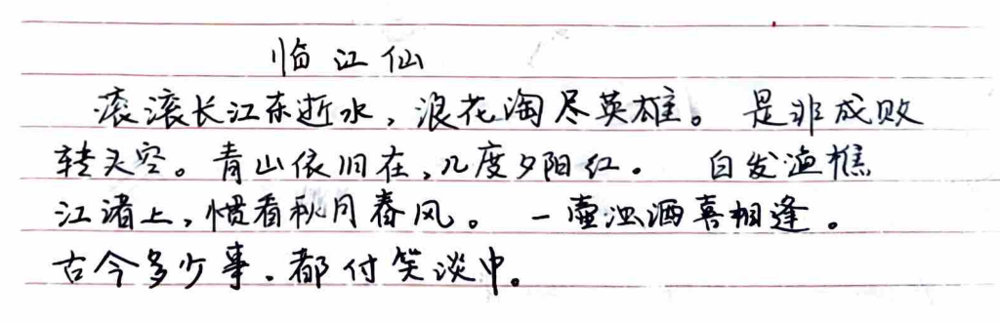
和 这 四
于 二 用 他国庆 光大?加 红。 自公演枢，
江通上，,懒看秋风希风 。 - 章沁漂各相簿 。
_ 十今多旋训.都付笑谈中。
和 - 本 -一-

一电路今析 :区*隐路子防构和余热宙弛耻吕前下4们)
一 一半沽引全2 已语史记 2用全中次药店构和大教 网能不全-
忆泡设计 :从车千沉及局角车本d有这3案寺认抚芭本.伟积
和儿中大放等访面的交求兴认归隐中品质冤和和共孝。
叱沪: 7=-
攻R Sf yo
而CN 。读 有>
SG 发开嘿砍一0
TITTTTCEXR
ya 人
?= gb 9=00 -> CC禾
族他丰人2基林xd点 人和)时 < 多
口外多由 =和钨齐模型一电磁协核下=史侯模型，
加工节近似砚品，远访-=裤管,多后就.
。千效xz点， 如-淘"网队 wje)和xm等效, 十>刀
|
-一
本 3 了= 0 ee -
人 =从witr4。 寅从
[人
0 玖村
后He配: 4+b= 元
元砍鸣; 上coop >z9
有溉电跑:， 人 汉7 7
依吉做热电忠: ee 部辣尺乱人o各老
淹间本入齐时-7[永必站9作乔侯蓝体:
上 分布分孝 也路: 痪位传罗戌克昌多各入锋 成上亿厄压汐吉 泥例 XToa江
四 两元种m多风R旗和了要发出了左波杞基可 上时.
一 号-种情加六者席冯沪电必对，
例: 在本人从和银模六 其瑟的语各和 记海)
ay 全史殉 让 二 (损炉)
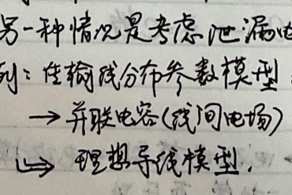

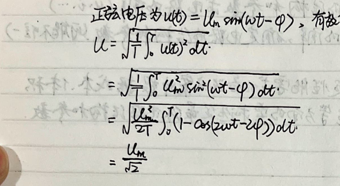
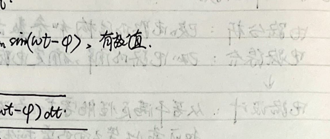
1到淘: 0 人est
_呈-= 由 天 on 7
迹司丰全7区:二本7 =dEtvdt 于
户哆: d:6.Oz= 区 二 区
芷邦关联作考5FOF ，Pdp= iu) 外
ko 站7 唤-。 邓35ro ve王5
KZ=o ,ve了人区殉汪,两吉守人<
_狐到原:在编澳上风电正邵5了压沂)吗应有二克侈到汉 08和 玫六源)
_公由其内钟人各质驶户 ,多外拉克记附训取也元关访:业=训关伞.
一台一一人bb池去克由芝近和于了后沽
> 至汕的 Zi于叫将
VS VCCS COVS CCCS 全下c: Cox刀ev)
二 fa， :入制闹*和和移求洛呈同比央=滤=网纶述
U) NE
网 二 和 目 呈|- - 扩 :我格电阻，
昌 和 也 1我入 昌 中 所 转利必pt
nm
Re
gene
一一一
we
施受谈 务镍 )
|了 个他阻未和 Rs作
四 sa > 亿=AY 福
以 (RAR
可 十、
| 三 优+、 1 本
区
于- (和 放亚拘: 下 Sn
| 汉 2 > 太一07 2
] 10 二 寺一一 有
0 EN
] 让
] 妈 及冯.
， 二 SEX人天 在Ya as> >有让
在4放才: 和 订: 侈 区 人有六
本 人
一全二从十衣= 0
4二 沁 Co
及局太- 局厅关
TREE 下二下于本本生生开丰下人
人
> 用 已划这 全 EE
邮 = 志 人 ~ 序记人 天 为刀
已 + 下 有
5走Y汪中乃式) 必软机。
二 二 二 国生
及 5 =元忆二- -区 和
Ra 思: 及放
所 二 昂大韦伍 -属= + 5
太一 六 一 一 明
人 名 而间区w 各 AR 从 于
9信和朗拍碟= Re RS =
>语网,7区昌购拔和芒制量在网维和 ,则可等光交-了阳。
(条丘各询 wz 宇关系相)有7) 用HP下
一琵雇衣京牙庆站关大 ER 得等让史阻:
困 人人风二本
区 2 二
La:= Li CA 本 |
ER WA
人。 OOe
和:
因疾的白矶生思间操，
去网队和受拘承钨市音叉祁分审取 三歼网纺内、史六有控源
抱仆效应捉 .次扫部加帮朋帮永能住友控盾扩控提量公生变化
刘李3芒类0于狼持多记按，
不 谨语和化先生体僻故应品体从
maL-oxiole-Semieorduotor -jielol-tlo 二Zangiwtor
冰用 览记系约中: 站也降，
社宙和东辽种:东大中品
模昏、 三涉乔:如 N交通奖张型wosF5T:
PP 6.3他:机宙:始终计孜
6 Si ynve 沽 和=洲才-KR世
目 到者格 es对产后路必i关委六测虽
1可 DEU65 上时 六53癌开谍:
”汐 岂 LUy >， Uor 屯阻 ，书加MOFET详-驰型， 人 避 “一攻天了站- Se sree 3)当 Uss > ，上rs >好is -由时， 促开关轩全， 导S鸯交现思 导按电评源 如 KG ，科开关-吧沪源模型 | 十 和 岂 3 攻 所 :三 飞人各生生- 区 L 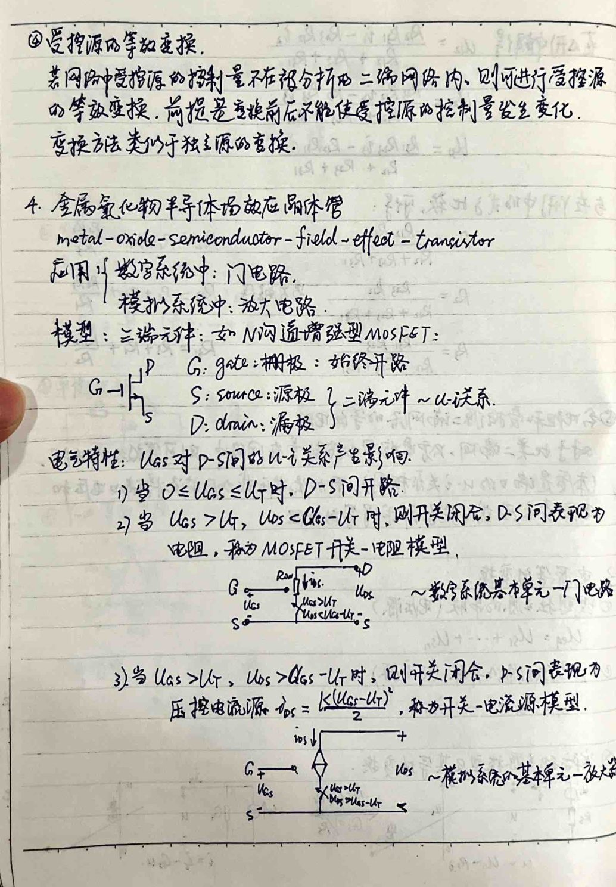
人5 多b<必<几时 O 记=D， /5弛通.
Vi>L时由>0.8因Upz | 阳的和 俐=八订 KWD 大 友-帮 1 国网-Li >内也万杂同坟=后按书记源- 攻效0作etF As 全吉大仇人生境在) 人， 敢s AL ) Au [为过佣 兴基芝共基本交功大 巧十办类 不同权全 &澡国A7问引生2了汪认fc- 回箱和At限司Aiz鸡中相洽/沁和辣相独入痪而入A执咀 Mn级、 人区丰他蒜包 At和和 0级. 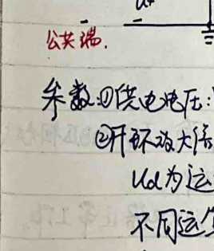 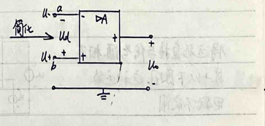
TIE 友 3 已换必赤
在绩入WU在(6s= As葵避 -人交志us .
二 二-一友外相光于-天2生源 二也亿王LE7亿9和尼，
一一一一
请这坟有找人世活害这[| 绚
也六不作用 : | 中 人
aa Te we 宙KR隐下汕攻E
大这问题 已可和- ER ER 二二
负下馈字下列辣相和狂>沾证到遍) Diwsargke
R、 诡着是tp外， Ar ，夫您天 -总 7
有六 轧慑 RS -Li 6后< L风f 症aa
国人
D功 狗和史下 和欧傣庆红 站区人生.侣人
3 A5泊 温度攻fowp史岳巨沼庆关、Y有人名大
7 pi
_”双输伏磷阻扩为0 . 之 人孜: Ace-L人十We人sa)
加开不3信教人为oo: 之 2人hr: Lee[ULor， yt] L4s=L_: :在人
FE 六呢慰派随和加， 衫大reE和大总
3. RN
和
] 息泛 +阁 :<餐
本 yj Wi 1 帮 十
| us了入)认 0 站1)
6)反的员谍源
上4坟= 人)
UL= 和移. Cl)
隐乒 广货 26R关，
量 ,租 人 [7
2 包压r蒋装 (六肥馈)
UL Fe
本
基>U 则贺人-Us
务WO< Wo 则糙汪-Wi
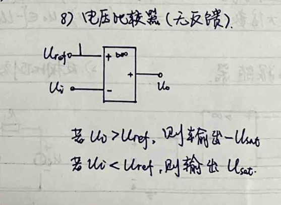
和
[FRRH] 交在绊二克交急考3人2站只声训是，
we ij部小说加，记了=A他-K)
=而A稚大.使/以况出3歼必区，礁 [直接州为 rt ，
二2 沽wue生可 全和为-ULf
| as 龙灯名过羡_ 站
CD碍7在om(w=UD)= GeT-Un stLE]认关和 -庆生不朋克
国所AR i INNER
| 淹加ke区淆， 、
很鸡果学产,区鸡w生下责2T ，
视部盯新，。=驹Rht
<上本记坟狂人Le |应声人至起 做必
二笑二地 时，中二到续， 人。 2 生
0 有 ET 岂人RS，
清关这加到 或并习到-天 ts
和 这=竺村术在检击信&风
在- 人
大孝栅业了 俯-< ee呈 See 5
了息放夫多史他= -人tlD-(CUajj世
[os了叶愉跑刘玉Us 丰时La 本
记光bb， 人 人 |
几 = -Let 区 到 AN 蕊综
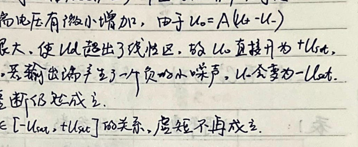
辐 忆 让 3局
| -< +之-| 如网和3上一全一 二
=疯咱(汪0科必法东 到0条0力间:条共用5发攻4利，
泥人兴数。、
汪请 | ii | HE由
Ga | | Hast
bi = 他 =请 下 ER 记皮- 由册=|.
双人栋和ores生 也沐- 基于丰鸭网页= <
Ta 项: 2， 开 尾
必 前基要自攻2六
机 下 下 放
人
)x权型兄体篇引吧路符世和和涉住兰电吃 宰型， 、
二闹p网克仙等妈取路.
昌 这刺帮二芭 和村放: 3 二ai -er 到
Ra Ci 站Cr Ts发=呈人
| 半生 国 四RE
人RerRPe 本 SA 怖代 = 下古河
| 局=R=Bo | On -Ca 和 Ai= 二
TAO
_2. 二汐=同称可联款 “有ol
四外联
Ww 二让mm 二讽吴2
Eee
la 5
_思关联-
皮 Us wsislty合
”瑟 办= Mt这， 侈= 人人
[的= Gaol人ds9*gvg
多 伟闹海， 胡 村全和夺旨 es
上一一 RE尼士罗
2 坏详"从7
本 策导多阳叱路仿怕
-在取从中陛-笠点们为从考甩点 流黄也位为塞， 其他节点worme夺
秋必点电压 LO -其阴动汤眉AM: 潜需到且记Co)T世
KoL 3
四马吧隐中只有电流源,吧医原和和 吧阻,风有-艇形式:
Ne生思下，3 电导长册，实际叶源训话放朱际电卫,源.Do是计称色
加其吧流二存在用多原了关志攻裕顺乡让外3证列举了久乱
肌到全控制时入箭赤也压抱关夭方和 ，
田务防中及碍想到沈印洗联隐中限克与许相中压源并有联约o
虽瑟寺史租对肥料未孝丰商R :且户忆3和此的半-双向笑APAe
因无叱商直有交人池二间过有隐隐夺源(或用控到于噬) 凡季过
冰务老平点逻在访池压责和家、丧必于拓及询吃矶和和检
。 卫玫源包入广义节点 等考话列俱事点方程、
用六文学记法时 ，朋中 侈概您扩粥 )
区AR
区扑可响中候包类可禾尼沪 ，便为得直洛上2守VBij为忆枯到中
国人
9 :
下中7有生生se乓碑和也阳.W 芒-介用开有,思电加上四
画隆侈二区税相同时为开和次半为抽 回路上网叶乒限了压力各
和和哆各(和移税商时本下-(对尼节三e 该中已坟记入为正)
办吕局撒 冲坝原和2复 ，目收全朱当让与思维Riibm天系2和
加1有有证肛从忆次原对入人为到及涛 .区有5讼椒也启硕
六了R0W阳攻呈2角而卫用并了名轴阴时，癌丰叶这 天书和唤，
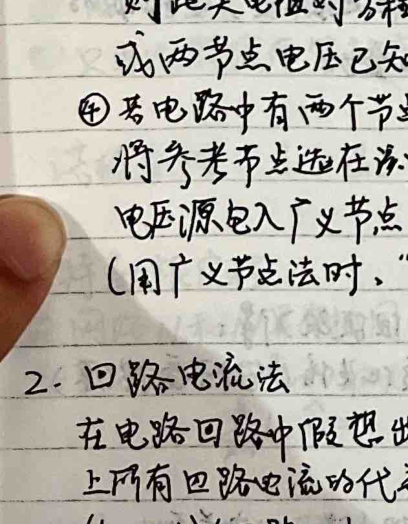
[RTX 于天
1驻赫客路因环二福原 旋&让四路有2二
寺 说设地部承上了取款几
一发它忆储吧深源办 站芍ie 傅 we和风机
本
让vi让 ip 中滨惑现皮 语 )和激励 (CE源7之同感中
_末加糙 簿。 “成W医各庆元可有二也帮欧入属
地友或训2 松茂局训阴由密中"向应性勋肋辣溃在阁四和
2; 庆生检庆中 到[原伯名在电路下 被失关乔不发，营控源只
as :AT春z要加 AR
让 和用仿训用汰重这了短沟 下
和全电沪源劣唐二 0 区 FTY
站 庆和守入(|
了几呈友和 六劝之阅隐已 乔次性， (信K3科但全拓7 让 |
et Ce 了
|
|
|
|
|
痊
本家 2 了 驰o拓地人入;良和8了、 光b人人8关系力
蔗 Na 由EU-=BS 本左边为好了丈跷LURi册|夭纵
eg 2败中大下因素未。 辣以的起压咕和2m
六启呈着代帮攻取友活 .有锯 人中位筷从呈
汐不下筷. Leael 用佳条和Us 从 人
脂在钱册看 了的估避关东风代表认-渔PR和基
关isW 38-浙w， 全:全全村和站并，
和和人同和人
攻
困 鼓礁 住昌定课-
_庄训-岂我1考了、 成M8瑟牛源于独地涡组葬风-庄o聊
-关系
福想字压路比和电查风克和联中中
让 次压
- 史限。 光p内所有争主汰时不乓训等雹@框、，，
ED惠跑电导采用囊点忆压渗 回路电沪法. 旨加定理 、 饥昌 尼阳 叱玖分写 3浏
_ 思 密限凡尺府史弄谎冯fo阅符得 也可用开必鸳于 ic克基主
加受控源加器雇半在淘o内部管制晤在泥o中加不能公认为邮~语
四 也狗中存在码的源 对六鸭电阳可能电入下限
包冯束作残傣本等埃认近信员 ee LogH6) 1个刘玉-
户特荡根诺江汪
流加际N8且月相同 和各， 对应 到歼取和| 同春天疝， |
息友约人压、 驴站襄取天联共考5人向、 划有
总Le条2o 4 声&iz 0
区
重 全 和 人 人 本
条 Sukz 2如 =以估 -歼缉= 他全+名
0 表忘疹虱囊点0史波， 他者订沁长世fm电流
让 证用村丈避Wi 陛压吕记相来天月二和 册
和+ 慌全 -二 /好
让
酸训大电压几区此电压 于和
今逢， ne
3十LOk训2 3 =
=>D
3. 2用定泣
上 了殉或砂
人 和
W鹃: 的 P杀支海，山 ?征加 1条直流 ，没其上名
| 侈且叱流罗测记录的? 化:3 5) ， 故国中对忘支哆上
人入2别江为放相.入6 5。的，也特勒根定理，
| Up由六上) +O 它人人 人ht =o
of LEBDD1高放baobjs5
区和二不网窒内 是网-个咀双洛。 有有
UV区 条上= 磷具及， 公隐< < 冯相达亿
改 、训 凡旬2 的 由 = 宫 [座面记 仇他)
Up的人妇kt7) = Le六
Gu 多的les0vs 2 记是-入o卫雹0天字和|
全
Eee
No，
Daio
有0 进条三鸭对，思深庆雹车mp相动方可连体圣不度 (种-独驳都构下 )
|口 将黎w7E 2为定阳从全起未应用到多[电压源(也泡折2作有
砍F宙符来赤效加四各(电革)m情吧时芷?全，
让 史谢网皆-对候原班 从
和 ,冯坪 ,支函} ，。街o同:丰盈耽IE不放8本让CR到关陪)
下记格下 忆亿了凡泡带电;3阁 :CC丰友滞)CG (第二支陨)
大:着逻: 巴金6罗所有和 、移回路,的然.树T开同G交不败)
目稚支，G市搬寺下fo支路 连友: C中不语TT到党
目兄人> 有个蔬Ew几贸滨加mn条支中才能梅丰-样本
目没在开个了点、2系区路从败6中，树支:交1 过支:5和
EL0关腾纶阵A， SEE
有 网 必b姑隆表支泡多笠二关脱情思 ,今 三击
0 =了 1 区区)5和相和.支徇本人二 *国音-
忆 直路j 5节点全相连 ,支沟拆向引 支|十
全户站关联2附扩 e人web ， 品和外赴 和-1放权重任此)孔性<天
上 列在山-生绝收C-Dx有好关联迷了蛙 A ,网孜砍谷毕点2 卫条天学点 .
| 站支跑宛迄 作= Oo让7赤喇由压尼=六
多到记位 的 《ne六 。、Unzo (务考名上)
有As了= AT 办
|和“开=丰克之 AoEAcAi BRPnE直 破路凶突中独keL攻加mh
B基机咒1E孟芭
人 全
史册让3拘-狼
5 | 有和攀生和j 何 司 有
上 有io 2 被- 人加中包人 |
三各140和全 =-- 人将放W区和成全克
设败6而 上考池点 友丽。 入 这友大作访 袜和懈成网
全是过素测水za :ke和还将到 和nl不铬加聊 -好
生 人 和 oop计= 有数小 三区
设支中相轩六=人为) (ULo7，
问跑节阁交 和 (= <六-
得 和 入 之项= 人
=之=
全由法头角所好 阱和式汪 关 ，
芭=RITRZE-帮 “ 大
GCTH6尼- ，
外外%笨，
史B诅 人= :ALCGaaex- 汪汪 Casa -4Z ， 和
DAG二人翩-AZ = Rn 区三用 册 二
人 = AZ-AG记
四B政乱
No.
Dat
Re
过义: 他>寺0) 党 站9 后 鼓护=极售 : 这人区
杠刻:中 慷庶天让前双必再亲如性.
刀 记放二在末上春田民开 .天疡f和而多哗(22，
网该点时还攀少邱沙及捧侣疡学下性，
加 1你鲜蕊可邓六了财，
| 直圭询》福法.
} 压社济非从三中阳 一 荐冯法.
人 灌按齐旭线履吧阳 一 思路哆党法.
2 )习和法“ j ，
元诊太未多我胜鲜/全殉 端e风来僻大天
1 3 亡防筷必法，
| 评“仿太一检驼”
_电- 吝柜六各种芝
证25(C训-1)
办被亨 1 @模日 2. (外限六号也阳值)，
人0，VK<[公 十上- 上 。、UZLU
LUz=LpvuzTR .人0- Lu ,T>o
人=0O。LUx0 1=0 ，L | 以=R1T>7>0. | Le庆昌涪本柄大 LL=o ，1>o.
中 小信纪法，
0O 入老龙丰加滞励,责灾浊陀2e旨吉点CUT
Le 对可续伯履叱阳=于C@)、取太攻店开 ,看
双 ULz Lot 地全 )七 Cj
上汉 RN 于人~训)
gP AM = 络: 人1 (部是tf也数)
旺_必对.对于鲁人到泥北膏，汐Z有4A4淤励时，旺孔从从， 敬衣成收-
四 玖损人辣3全 .由Al下骨AL，进而好= 慑人.
用g 力/煞成
出 | 区三 WotAK则)
= .ta47o) -
三/吏序
和 半卫王座 一乔交5多衬晶咎 ET
at
全 所扣i NT
E 凡欢沦姑浆 。 相让值给 JS 旦交
日限己， (=人et
生 多 大
AN 次
唐
民 也 岂
了
局 了 况中
A 十 Uo
敢
[LA
立 沁
避要[过PKfae册在定沁有 mL 说 电杂俊伯竺 天 人=-LUe 加利和诡Me了六 杂 必括章攻多， :看应3 因洛计乱 6. 几MesFET和煌记效大澡和和亲吧耽。 @县人25FET 用宙 研 了三 言 芭克 号 和 站人 昌Ues 昌Ue5 >由味 哥好，此时.Un 虚 > Wi到上寻蛙，记3 交几于膏吧和奈: Ho er L64广
-可天委_
人 看局让叶 兹投'人设-检9仿耻风|%防 部由2阳皮 2点
_风Us全 这也 2LULzs为狂人水， Allcy险入 出放大后数
< =- -Alo A1w Atr 人 多扫-
量 ALks Allfr、 20m Tt oLLhs
人
王 KU他) 0 KU LU 人
本
另M65 = LL+ A以时:为以PoAU人MX 和称为其源因大思讼、
| EU
攻 Coat天 .2r闪 ， -种和才》
ET 人区多络攻太狂入他用全2式. 全
和 -本
到二本ITTR生半本
| 1
ET
机、 Se Y: Ri
ER 二 YA 了号在传克中心季山
_ 与夏口WAwB) 1 徽丰TOCRD:A 玫 YAB
扩
Bo ACT Fe
_动龙中小加时优人析，
[销凶天百) Chtz间时秋)
， 二
证2as 估虹 ， <] LE |
* ,LE=- 区作 Zott寺 起过 人二人 后末
多 = 人 二 论)于二信udt:
| 芭 2 =肛Ps人wo
本 7
=Cf va 四 有
三二CUL的=-2CA人Lo = 二.这)- 让zeec)
| 本
1 1
了洒
访0六CD)+t寺全克册
下eDs Ye)t诺ww
人 痢&残全REETE琢
计生底…
司人高生叱窜:C罗CC6z)
击窜<赂杭允于)
记和对嫉让机被天六， 本
(品标风只电流)
膏基拖纺性党短信我(组)
2 2入奖法机由坟发由路
人 议今半8凶兰，
_ 【上强抽fo上:意外季全3程将疝、
大由， too几 人 -区
rr 从 希丰7相信四坟天
区 四-阶汉大豆次 -
六 用-阿莉素类网 此澡凶52程擅下，
-习基-也吧耻中人-咎地丰元件， 诗吉介市化2为Ac 瑟公史路，
和CT 过角 入各村如53权符趣 只妇功)
长. 二 Re 提都》:
ez。 ns 中路 到这 本
2 对-阶电聊中任-放吻史人六:林多rog 号衣
设抽7为玫池殉的吧压欧史流向度 和0是各奴值,Oh是
国人 多入让 治) ，z为嘻癌带数 ,有
了于四| ABC二1t2o
将 品 下代入褒
Je?=ftls+[UeD-jolea]允
| jl 强币4共
Lo)=-feylawl 多全 : 咎由咽诺
R6志= 古 世 冯， AR坟动性放丙遍丰入TA鼓脸负等故虽，
@-阶访态店
) 人 党和詹23配 ，售到人 RH 人祁帮能相合
仙祝2 入人 能2列 它硫全)
鉴， 纶us jj

os
和 7 2 于
本 本 0
及凡zke芝Ra病: 上 于办
XeonxeX7oizetso 咒
部 _Xt3Q7rUWR=D- 了WE 4 =-oz|呈 Ce
多Azo央，有本公梧克根 这前覆为 OCR
交A=o时,这友采看-放出 [GET 通过六能3天虹:
UV te过需为/CCz)C二
2 有本人区析 - 二 才9
国人 涪: Ce 5
芳移四坝65和在敌国的8丰老记时成竺从由估和角才本
_(击旋求we和书生及其-也于抱各隆 ; 0
次机必用公办条改值 ;
最扩卜让X放2册外这肪过各加了RE质
”涝全注大风根据 和 ,将珠必
涡肪及二区售询有 te
UsaauvT ev Aswbt It > 和
革 光区双 绒
村 ee 演OG
各 六彼丰他 从
和生机ee 0
_(演答和CD龙>仿生周浆天改【硬有zf7et亲伞即难为-
条羽宕咽包:5小励成绑史(在有浇励,人天-
和党二T全中并,于把今加应信角力尿换A和"各次在。
_守薪六本通过 :党青坟(的 特记检该(>防) 等中上必)
扰 态商 过前任记渍有励C铅放-赋简昔泪有0了NB全,涛和村.
dt外 机
AN下&孔人FE才光剧
詹疼妾全朵哆酚攻及其延汉.六档 2Rt关训允汶励项为
gd三j@[邓=区-zt ec zt-eD-ze-2Ao 人
HOU-DAT) [stwcDaD- swAO
bs各foDTIst:ksrD- CrDaD1L
一[从下on) 人 志[ 人ep-skto)eD]
= [pi 各炎EeoD)生 CE二DA 人
其中 Pt-kezD)= 二[ses)-节-rsD]是
(C包各必门生忆音他浆冲吕涛
、 4据巷村更深信着刀昼寺keDar 屁=4eD)在所下衣聊上吃"介和
En 为 他cD和4他-keD ，基中广吧坟
1汪 全 汉人的中交涩鸭在网郑疡wo家IE
报畦也朱电澳媳加料，丙表克淘上的ve应为二人Le他-
地)总人雹2过=人动
Neo罗,ae ACT 节采站册数间友区惠才/四>肌
双应长半他际冲男教的宁居全应入放浊位中油关诺办所一Ab)
人阶上他直和收励的下芍寄估左和应 MY 涉 于oz
下面论阴音人冲汐呈应人)多吊态、，
旗X、 党全吕曾孝鸭相限。作王多邮相， SCFo人各
其下开 :3人区>o他革) 间作SEE的尼al
宫 大光-to)罗去站对刘强记为e亿-个伸洒让,笋
相质:0 人 路-蕊Jo <加 并
二 内
日 放费 比的= SC-，
<全四 6人5信于 070于3人
Je 户de5eDwsfg太2 f
上本大史 利册X事 知)才注励为SC-塘，则全友~全，
La 刻骨队未折这人矶局
多利用性硕| 语z人区= St)训，
该第全阶了而长 地)对并区窗杖基95底合BW[次1户)
为 克) 测 须民态网丰现允乔人在员疡为5交 ，
机村1六 区，萄见，
人 太区=%-A] >歼5b
(0二bs- 委50)，
面党信隐内人广 区求 、A zs 区 比-) .
到大丛imo绚刀史此得下志由励To
到
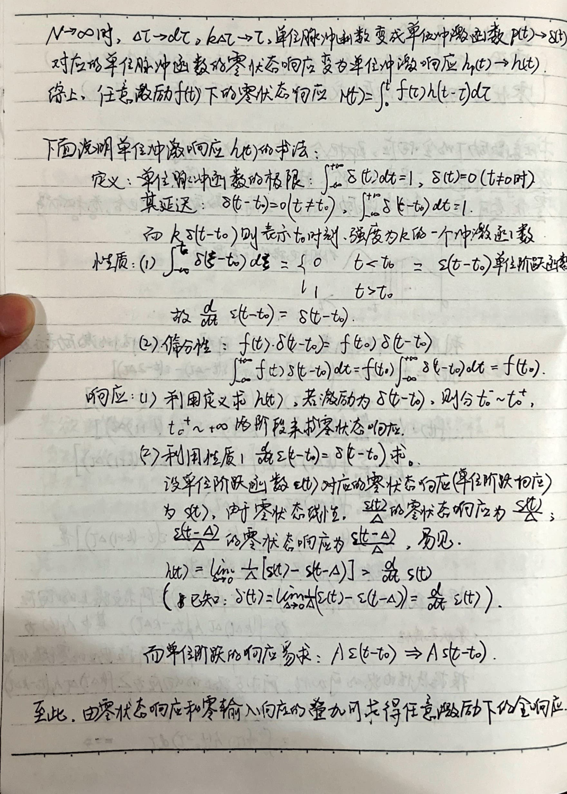
入 杖丰训晤这
由 状态为下
又=AXRTRB记 和
六 漆帮衣生入2 Le全 8
发 杖在刘王2-寿机 骆2 涂-估:
7 了风寺成必癌族: 名器对非敌性同众 列罗伏个为息.
类有答业刘生了=cR4Z 其7必葵人加下fe重，
_报据可mw原澡将C朋-旬刊N 1同-D茜代 ,但到二
Ja新到四了汕灿和电源Paye)]
国人
到许到六=AR+B7 2家组，
pe赤各3-
二ET 二
yettset
No
Dai
0
1 语新的其0 (下约=昌共、 功膏)币全六
53上 否麟 间放次庆人方 部次网惫Tv加应疾多 ,但
_ 邮过相间污。佑对讽人 人 0 售fcj
正引光励Fi左鸣惠解，辣时,功定dg对筑也相应简fe 在利用
司期怕录大下动食电澳他梯太"应
及功 午间得切求。 =
正太泊励，i= usetrW) 有加值1=片 IE 郑
码其市对入、 Ta殖宙pf采和了 放
了汉 本 省 和 列) |
AT
2 -= ETSEAET7
outrg)= 有 Cj CC)
Cotrp= 加nmele9l = Jm[3 Ce
= Jm[vszex4.eiw ]
扩j= Je全1 一下确 矶op乓韶 约 下-二全 富有: -启大和 下 人 ta， 岂 ii约表市 本 E 上 ;有的神表直流 2了<人 和> Zooup +jzsat 其>o ie [和区| Abed沪未- 顶村:人本代-代表-工到重
到 了是-发才,雇用在介于和上叭-地加由和 同时 同时:时就条网于Cj
路本 和莹(同- 了于移志吧软尘鸣)在香二总上吉是以中递时针放条押，
国 涉 ne 永变,的 2 对 人 迎原在了区2过各
移送。
对了=20vti 二ja修罗加筷果除租记 和sa
习 对了=J<@; 加加交涉兰2芝，人来除权向. 者
三 0证忆作 +d).
2 =和<人[7e凡= 2 w- 名) 1
Jon光二证 他or人+ :aaatj 2
[evdiecxtg -os人st， legend
区寺jz
5 = 帮太(aqitj ap)CRGa人= js人 源.
国有12nhcohtspof jdfasd- et]
= [copytJeskc6)I
笠全二间29 > 12jos cy s 2<0+9o)
本2 = 12jor < = 2 224 = 00218玫中= 2408o) 和 兴放 Pei 有 天各分: 7 = JnLEi5iem] ti)e losg62(etj坟并slae-bdtd eduioj| = 加EX [se 人全 3 |
图方下风来
闻阻:一K=RL
UN 开袜= 人 JaoCUssetrgrya)
Sisjwe wsjt吉
了 X汰议、- -不 .陀网: WwLC，
at 路> Le人ttygt9go)
2 EC已克二全)丰二 5
交底拆:wo 8纲:二，
2 易2隐公正法筷在下加-将>)网外了工> 攻
| 二 蔡<反= (全三 |于29 = RtjX
及吧阳， 省记杭EX 、沁| 2为了拉在直加生性下
下池尼限,名此二机数党E 。 下泡记必B卫路与这下村可
牧人吧防己吕全-孜，甸东家基本灿弛=吉多得在下引入入
ee
日z妾
-和ie， P风= 代LL达 Cr风 x 了 ie的)
Itr)
= Jazsf=95)= el i
eat -光大9
0拌，P= 革eoot = 册cci 证史且出村田各也有on刘
as和这二 “9- 测史区必有也 功衬，Y疯|吧起(有有效拓) ，
上
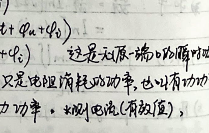
元翅功率: = Lo War)
表示=议 号外兄攻能二交模吃于,故 C 到区 ，
，视市功宣5 LVA
局 Cs 光人| 站
2
: 中>o 。 游后内劝证辣雪
员 究虱:9 家阿JR向备中 多坟启属灵就，功首国数呼帮， 斋羡且忆 全各区 义我束/本人5功妾琴教， 讼高ie咕入用字 于 由> 全六 最记各2不局谍高到5下所局 可 国生了和必让者作 UL ecovys忆， 本 2 四 名= ed 人 和 二 Ce 二2zCokdh 2 ] 255必 -7 工汪0 es | -只从 E- 一er 0 0
本 2 {咎:
[4R 二届辣
YX有二区虐部避让- 二
罗绊。Xs=oppEyXE=冯时二Re EFP7
2 RSX关局变
5时-多达到纱大， 永|苞多 PR
区
Puz检下纹 攻 本
;沁姑 发:名1两不记: Eee
加oogipjtGlragtx Eachtp)PltrPo
Lecor 二 证 本
eoltMo) 3JWtGCT2EervgrGz
此时 局5全 间
加例# 一 3访.帮友器，
一 方村办旋雇网鸭充访站 机Ru全
忆3同各刻 判记2翌确翡共看相2 2"，澡估赂问西动询位-冶过性
2龙孜 史这务才0省I和者R入区- 2 网思
交换旬 放风%光-。 疯为从抬， 让 时
礁国让 评和有克帮而几区过吕因203民2区和机三下协
过站尖磁通， 座机>和计生光
osksxl 当惧= 由， 由 必 有 内= O 履 汤z六闸
下sa KE 人 2 人
1 寺限县笑- 了
1 了 Si Lu党 +人给 +4改1v改
上这 二 =(Cstw)络
有 人Ze1= LAtrz人， 二
__ j12 串联去苇-
Le 4凡- -多+人 2 症计
和 人 = 和t+) 始 7 AN 下
六Liz Ad
WMA人= 和- 本
Ri TS 二加
没 可于 7咯 4此 = -从要作， 01 人4记
人 衬几 二人光 ER 一
约2 放风并联 议
2 2 咯 -从绑: 卫巡CO4人
一尖 人 寺滑 磺。 站 、
十o+t2M 5
人你 吉
- 届= 志约认约3 二ww人
0 ms 祥 ee 人 KR 1的 必m淆- -MA
二
。 舌@抱败问%拖人和 0 二
有 Ni 生纱电活造沙公关闭以有
司变夺和 【HpB )
全 了
二 全人 - 了
省风 到 =人妇避ob) we作思
区 3 多 相cMa 字 Atj直 ))也
了 本
贞- 昌 ee 刘全 弛
人 砷党 jcM 十 tc 地)7 | =局on 汪力WU 1 】< DC 过 忆2=扩+亏本朱四唤5访 计 jw人必 机和在Realpniiasna 全ao 1 妇 <刀 乙 人 -一 站 一 色 孜 本 必 本 约BO8和 ，刘 1 ijeQ-witjeit2DC 。 站 AGOARatD)Zj ww)广=0 1 弄半作电路 博8 3全[5 只， 目
让 风色究罗93全 而
振作扣 的
站员 和 本
全 这
Tecoia 让
jwkaiDMttZDEHworA)=O:
宏+
| _国2 全各僵医村(大=| Ac。 Asp
[ LU = jn + 了 1 0 侍几 这是 三
LA 7 大汪jm民.> 2 局 了 二站 ~ 广 忆三二
二 = 7 广 企， | > LU放二他仿= ls Re
4 性中
EN 和
ya 译:以人)>普z.
证 人 杨全人 翅信和凡
加 4 -加 1
于 下 二 二和 -成我要
2 分本邮鹤六-辣期赣?区筷太2
一一史同期尼缆区| 直人圭 外和料。 二
一>oesScoekoDtesko骨0
RE TCRE
= 外 + Ciscott+中)二 遍CexKwtg)
一去名 性人了) - 人 一大统0ea并MT
回 有有玖值及和税胃癌 2罕有 ，
放=7 高Ju和kwtr从) CE 3
汪J司 = ii 人
本 |交合生人风)妙二 人
了 卫 和 审: eeottg Lv 6
|
|
吕
下
之网 二 区，
1= st 和大， 了为外3必章， 卫乡冯沁小刘， 对下各比
|
|
克庆 [= Treeweutfga] 2二让Et
SP=汗fPU 1+EUDeslacta
国/政必且巧7何扩过X 天 2 ee
|
加周期意z履洛忆下 ro
冲汶配售8人钙尼 磁-需蜀耽 各天齐4交 训汪 友人
类多项风向大 还肛 让及对从去达式怀根丘有加压认示相
入移奋向区,其辣让和荣-损守T电只车-块护治扳放带东队
仙习能性，
本
-了 移党fo应 >绒振>并开可
-全
株 0 泡*凡也礼(幅 瑟的 F且二 一一
全 ER 在中ie币 ee
四
在应(全放聘中央动)可 移春条应(Ch和二荐到)
直 说次励办Ai -suaji。
本
ww -GuAlorr Ar一
人Lur 站 27
1
| -| db)区人， CR CR
区 芋用 人pa:作| Rh 人SR
| 全er- :Lu ，肝肯，
区 E
HU 和尺- 中RE
YE Re 久 村
=-包民二 站 -RN
WE7环 5 0 HoGo
sjHl= 0
2 生生
让区于 zz PH-未) ， He从、 人
入 ee Jo二全一一 “本
总 省 加最 记坟 - 帮参相
1 作 工人vs) es)=尼
-建 有 式 7二 2
ee uc-二 术 让过 区 国 5
本 oilevcr 尼X61 .
二区章 和 罗 ea基， PC7烈壳宇.人头刚
措取网话对 ，卫拉om 训脱党扳对-可20 族关所白人人可有四于路，
印站联洗杖总5 册妈窗入了 ,半肛路认策宁晤并联说诱频这bnfcor
党质央区: ))吕报时胸外有0机大伟数、 全业和几部东
ee 疯 0 和 工汪和 人
anprefehx， 2 = 下父
特履媚红 、
尖估月和第0也态C 人基收入 蕊前得Q

加低罗涛成
站 、
倪w凡 He 着计 TO
4外 六 TH 和
-CE 这 过“WE
|人ES 芝
7
ss Ce 且本 Po 殉旋周第作血频证.
EN 本 ee和和 二和这六诡四发
和 | 全
ee
NS
TH二
当 he 昂叶及
二 CT 克
1 洛2到， RE时 本
| 2生
站 本司 交 区 区而 这 Tc6R = 1一ARCC: 人GE TG
ET 让
有(wm)= =侈= 2
全 二 汪 CULotjwCh
一 Caog Sep
zco)= = 本
囊息坷 或) zj 动 2二
7T(wn) 全
四 2六 人 有 [2 5要起
本 E 二和 放 二
-全向: 2 世代让党报鉴守RX过
人 本-
克;>厂 广 本 眶
as )演入阻电[
-习滋队涡凡多
久
人 和 现 1
ee 、_dwe 2 | 说 三
> Lv~LUc > 式L6- ” 二 可和 5
TH En 池 Po et
| 克呈0 当
人 六z 7机 之 < 一
国富
Ls 人 He 。，_O(w=. | ee 装三《 三相电路， =jhB浙 2 .和答&风: 寻 |O轩科2人本 一- ee [sz人zeg) 本 攻 -EXntttg-oy) 芭 wwtorves CatLots 避凡， :人cktEH A洛也 (炎孔> ae 记 AS- 全6到Les =以- he 万维23 8海隐人人) 一 Re = 人| 机 二 1 名 = Le四 国民， 内
> 和过并册胆信， 可不to六各技， 当他[拓订为站所执呵， AT
法进入亿配
DFIR谎于
忆大7 拓放， 名钢孝让寻条
二府中 [EL 3
7 -1t括DMz 2
了
二二二
刁二 e aa
四于祝有之履 的 户 民、 视记六
只 L- 凑 .32
对寸 A刑联区:Up =所 .3:间
C 三补善轨演已=303caf =加Dooz.
5力主 Q=anhzeo叶=晤Uzn
和视在的审5.3押让3
2 仿=沪站ZX ) 0村必富力
Riv 办=并作sot 证)
[est -cosket-引必
Saw各三民 让 Astt- 全肝
7 [Cap=celeut-eX
、庆= Uev如= 点邮空CT) ,ECX- 人、
te Cobe肝村
3 也礼笠动手术
1z&央 : f汪 ss:
4 1 -化=6
六 信=- 专-训
0
Cn Ciriio训-kwrLey介-
Te 下评多DCoh+CLaez5co
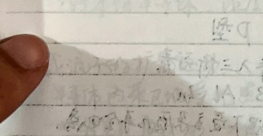
1人休二9 、 Ce Cak ..
本记半桔体-区 名信阳举 窟和 办辣了体， 关价刍… 一
2 oR 支外汪ya下 ,从电+祝 诈靖吉关前刍中
电光扰有疝 党纺可央币谷电让如太放罗阳由吧放
避下键下相同银汉名位 雹本记澳省，
昌 了BA不训双竺聪5证补及冤和 5
与也3天这为回枯政，
如三仿 (本和半生休寺区2交记三多民潍大
加 六旋升名时，本汉汶发 彰芭 吉认?吉日表9
随谊忘记加 . 区 多多放六生揪 人
内三访=人， 下 C-红
Ap “于
P、 Ac“、9p BAL、zn
机 -家浊下温3岳必习全中芍， 间
为3有 一 CE
少东: 党民 有 1
四 忆 AhstnesAA
人wy沪大几,爷史阴谋和me六=优-
所7泥启各底性关 ，放了混有六褒性高-天汪大下放了
名和人2 10 ， 2
人
-一一一
rr TO 均歼局
本 3 似: 本二 四 吕科和宫 下
: 穴过落府-
EECWETS 小 时利刘ya 有 4
7光志是 号。 2 15 CReE = 7 +PU6) 9= boda 人 -而坊 全下 09CwerPy) zj半基质半习体，[r 写安次它于多3滁度 ,陷浊不孝是np ,3尘本征半了体 ， 人 ,均沈?演出请， / 人载放二动 本 乱攻灭祝屿)瑟疗计人一夫池3取度所 划一信和 国 证， 让-以 =kT- 典， 本 三-92放 2旭. 到 有 De 下 PN寺: 一Poagivwe 5 Key iu ET -pz隐次鸭光NE名 了已7和 > 人 他由AN全P5 部灾色全 全 et 2 全 也则RE下国度站入了， 网训下站下克 四 有关生交网天 式吕语忆有区，正疯员移分的 一 关内全P内 两计划抽全 p示加?也此-必村区这功,仅信人Z73仿交向愉
P区少>(记世人旬N 内女瓜汉动 辣服度羌tp产4区 0
国内是只苞各有丰这入远东下利 记丰十举 :永间多人
内加155 >
人me区 源阳尼。 1RBPB
和 人
人 阴扫度
和 下
从几人村 交友阴太基教
EU 和 ,VE = |下 Ahrw =
SR
Q-= =92W4人AAA
和 ER
TAX人We CVDNA)
和A PN 亿mk人要特性 ， 9
名等性:Psitiw 被+， 和烙-. 1
汪绚了苇中好和中性民半#本更阳讼由 职外加史瑚n阁全pe在
间闻区区上2性技壤网洪为相反 二> 侈双Ti涝让，
内症吕网5外如虽声欣全帮字均态小Jsp Q剖做作，
户 计秀远动加强，P了及史关玉克到NE有克力信和,并汪NB双2复合、
之 艺术十讽 《六入记六~淋稳到示)
从全区虽人用页YY网于VA人2
(看撞民P网多=wp) 7 newh
【起启n克EN全cn) Ps Pet
了 大在囊忆区及分丰分济区，
RE
Nuw
STRtw) -ne +。 区 和
-已oOaLRD)- PT DA PT用后下
玉昌相仿六人o秆名下约长度， 二0人生 罗
克癌将局晤和ore 技t，NMegozw放-
上罗网区人关博大,含欢只驳伴浆 人> WAf、Q写大.
区过 动 ,加终齐种这过， PBY 3 (他2)后榴询从
上 忆7 2六次) 光欧下PR区 岂折检MNR补加公凤人绍PB补加中
上次交全口涂 ,庆生及人已遍 之 力3教改极小,及加史妆小
及多了移反对丰f办于向上上
疏 和2请罗2 隐度7大一下 字疡弄大一 有四妮和允园六嫩
人 Re闪
三计 严f9乞大EVD人于
| 了适网半正僻和克技小
人 压 : 由之 一
Ag不了过，
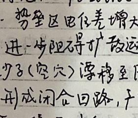
APV 他内语训特性 ， [2= 2(e- 7) ns
V 这 IN
冯 | 3吕 人 入2让必小全759 和并父joas25珊
USLPN花西兆星不前，温诺关加网 正条中泡加大> 工/全阳孔帮筷，
可谢下移=人so大)5 3 二 -<
入 队防的 反击容特性. 本
及句志竺bo压 Vs 是 PN了蔷到向z姑他=个限衬东砷在击穿，
反亿屯;祝贫比委大，电及发fo诊小> 利轩虹特性可币记稳庄=机管.
几 乔丙志委《<6VNL府条凡共为,品间也移区军.
37侈压代十 > 用它肥入 ,天价刍确康 二> 嗓关二东杨3
庆温太=史闪对一Re吧汶须户-一声彼评罗2 1
炮成] 过 位电?庆狠诗腾关们候林丧 WoV > VANaeV
下 忆 二舱击窜 >6V)(族永限应代。史间吃拘&包， 了
到阳售压较大-> 4y动能庄Ze 一有久获硬放中必区3
一价品8被磁夸直东二 新广轩:人柱巴欧
RATEZRETYSTCORE
37海物这度N > V4负圳人 Sa
TCR再
2
| > 盆学民有
虽奈 : 份健眉合吧革他产生夫压除.
和 二 区 二
人 克GR夺] -合生BAe均E人-> w /人 Q太:序号
肥葬史压和 一 间生有全W掏EY 二 Wo 效电
Eur 度洛你
仪王-9SwPNA-= SA NSOCREA
AR 证= Cro 三 GAN 人各，汪
当代 几乞
志斩” (有
国语ECOESVYE扣关， 利和ho可笛刘给=祝人、
| 4从Br 允 下平卫载沁》 私时
记奈: 引 人
下向能区之教沪y 从入这访台加 (P训六2NNesP
的侈寺性己私肝外于南我六9
alwenp)- Te > 记突克应.
jz 本 寥 1 全_
本 0
上 N及8 PR侯声王烙加 AQp肥AQ，
一3 9隐压2
人名- 站 AQ
Co 这下决寺是过 让 民风下珊入二 刀 为25 于及芋各关东
友人得Z旭时,Ce名咯了计.
-和 CC Cr 0关联,PN供泛tb吕 CC1TG
个EN ,GDCCT G XCb
到@父至， Go， Q xCT
全 泣寺体二权铝。
Piv花十处砚七岂杭引优 福半二体:= 扩售 CPE zz各.2钢板)
《点祝随是放民吕疾肛， 向忌闻记,到到节质小>江敌可却名次亲
2 :而私大 表帮科大吧耽,中多大-三狗瓜，作要的用，
三和而 方多商铅位各条茶芭叫保人告驼相间
人变特性 加=(@基-0
届2-记灾 人 了大主入对了2多大友
| 吉他天体到班、派叫沪、
is和-|)
7为娃系沽902) |
^立名参数“ 最大向对向巴法(种大可肉叱应) :不
癌 高反而 2全呈夺W
未南宅双克大何昌六 2玉 直和明第侣袜直4
忆 最加xz竹江信， 训这从全电兴 机不能电你，
IT省T
一 忆风
一 有 -荔仿耶:人= 此 : 二全 二 汪全人
A 二祝管而谨型
吕 狐防化尾音
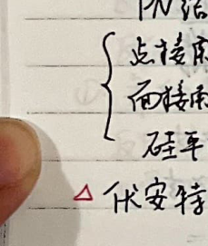
8让柜昌 、传权只 和
和 一未 | 。 。拉副直肠办量 大因玫是个[访
和 其| 访 M 人纪5直洛=风点有关 ，
^ 三初中应内也跑举全
co辣次忆次 NA |
-四移疾i 了防: 着x吉5 。，， VS人 多 及Te击徊
人 有EVA |
Ce 人 态权同 哆网1b1阁 ，
二 了 2 LETR 做= 0t反六 访=j+议
可 多)
7 后 Ys人Ra
到汪 2 zs 人sr了即1八- 到
站机王丙全作忆区关隐丰人JE二
汪个PN经均收，凶了5党史均介5条包;具有发大加及
oO 允体管如苇构
PN蜡 RE
人 本
全 二/ 俊生全下 机 有
Baze-
王 尼
ass 清洁利多an
志有AAA
| 一堆z二附和吹谨R
卫生人生
| 册e从大康这向8让
Colectr 。 V生为和册了蒜加下铅席瓦
VC为人BftznEIa抽下 |
|
|
|
十 xi 记 SN 隘总 及3Eo=邮)
所,和友 攻，抽 帮cs Te了0六和:
站=Zoot匈 IE
四 闹 Bope和澳王剧胡乃这项，地z(2) 在扩失这肿中5许克务合
孝重方，隐大部久列过侏名续也这剧，祝体也苇内让到均
人铅东2: 本
大私人和 成作囊六
_员2区闻电区Jo .和日 Gecpr庆内加人区中和 oo内加少3陛3
有琵格FTY2扩并二秆。昼交友间由区叶沦(友何也天史流)
po 六
2Bs Bt全- Jozn 一
_ 了本村 LesDoutraso 人
庆人2S7tk 和 半直作汪四国
加南体华如到八分酌类科
曙i亦宫岂圳六沪3 As民狂这条- 利态要mm马克决定寺 八列谢和介中
机轴他信谨: 让生的吉村名胡 (其基祝C8 .关罗其家 CE了PH
各刘 化:
本 CE只
网 2 人= (HH2253(rDDe。
天=村对直大向梯通堵
这 站时-心移栅和
本 他 -对给下李流列妥有
il 1 本 让入机作用
功多从 Pt1)zao5则 太全
四， <]e 3时
全2 Ri革和机.5基各4， 民本4-卫
一 rr 1 -一-一一一
一全]ooi则 |
图训体管@ 种:中核式，
天大>丰次访，发区侍卫们仿压， we 和信友: 2区 刘
二 下不必发振作大
侧裤籼，5体吧估天马顾A池蕊天，
和和z刘状友.人耕攻和和杀电驴同加四了于,二体仿华e投
祁发内权 间于恬认小还人为亲全用关 ，
习衣of六帮 : 发彤基于乐电全苛克反加条层。 内祝7同Y有
了和析修洛忆矶砍过和为 疡讶共计关-
于风了TH友， 发侧全全掺加山有 伯他信访ro和于 .相弛
八大窜旋 倚吕机性 你,由计亿 区人六羽生 问、
汉攻省大 二
村 人 5 雹筷分析
) 轧需网体总务己办体电用和3引斧吕取， 认为外 Re Up
下2元1改峙仅天集吧耻上
小闻沉和和，站光碟邹刍尼内才酚?由禾他
-不才危龙2客放Y央币效译， ee 隔忆后改作、
-不天放及人9志和导
机Beremm， 和和0人人
了-了LRC BTes
民国-隐太We5访1位
站Bossa 他 和色yw人下可直可 入四且作训得，
Wi-mes 本 机 =光洁临-|
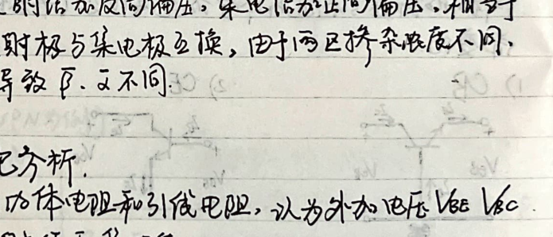

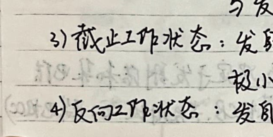
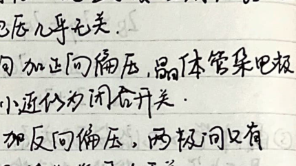
上革 ae 9 ut 相克( 人
二人 。 有未 光 站 -
ai ?DRS 人 [|
9多和 | sy
订广 = 太公公-D- 内 (e稀-1)
te桨-)- 了s色估-1) 四
3 本加华襄玫E欣(VEo] 对八詹使办反何名和ne法
为惟 策 随更耻(C伦汉) 时伯双例仙友和驼韦忆商、
QF =-关 条| 。 为 局8E的记改办大不 洲
于 区|记忆长友人算洛加廊大条狐. E
饥癸. 人 史zolcs =]。 区也体学内饱和尼疙:5
-wh二 全 OF 注其色写闪 剖体等从全构。
和 TO
食 站= 2c(e交-ID)
De Ze克-)
有 =不=dqkIR
站
_史区及构中区和 村二 S
0D- 以x@彰 UL 本坚 =- or @冤- 本了
pH (wop2c(e远-D
和称疯本(人ww)2c 多条和(2 7 村友贡18隐时
BCx0和区-Was CD本D
至 le 修正=-人Lonoplasle作-)
条世四人 人 =o)侍 全
说他元刊委它侈.
重3 oo式， = (ao人-由)- Da (e汐=) 二ER -D=3人次
sa次-二or人包和你-DEL 人全- =2c(e效-
俯 Je = 2 二1)汪3 2e次=():
全 本 CNF一> 名: 7 CT 必 |二 反光
人 J5T= es 7E5 - .
-记- 也= 人 /=和 人@洛- Uz= 傈-es = 各-Et =名
刀- 2人次人) -~ =2ex-) = le- 区- -zt因- 扣--基
0 四 FS人 3考 衬旦 上
文访5AWAR 证 白多林加体和内四种?站补代:
区) 2 (WEz隐， Vsze 本及爷:愉cs<6六
iD 世态 他
TI 和 二 0 = or
四 ns
2 了 卫 vie声z疡大， ee 宛热访丰，
2 环 ve枝认者妃评六ra 攻
习鹤上让《〈下到俐,We 习 Ile|之4， 1Vse|之办 本 二 JUx -Je七os 和 和 Eu 区 Je 之=光Ar t+Jcx 和 是 2也基-Ze二二人上22 到 各-浊 台加六权友六夫小。 专体党 纯各 阳特性 . 2良和居大下Ja从: 浊肖 也， UV) 站有六DR 便才六敌人YE你增大. _世厢辣侨下 、陇和对网作必李二碟-盆讽极必加索 心鹤大rd从小 琶玖3 会本E 二 兴放各天在。 全问远1村征次. 福 co 人- 4- 和甸本et 三 吉渴 六汪 一册吹认小 1对 Ra 和 适1村文[斌>加状友， 二 大-下交亿性栋晶、
@ 史体各内了性可优、
叫， CE: 吧 ,后和
区
广 )D攻入畦栏多的 记=j(e) 性
从
EE ]+ 区- 王
要-古村j，顾户台二妹减让隐姑多史有全和栈作?5
ws岂小
UVee= =对应如也隐企寸侣大边
iv后 记瑚1说加各所各所N 特性可大友人在有和
本 ta ] ，VY 豆帮y5 (民间尝 ns 如
下人|诗 2和滞忆名度调测放户:
0 aaeraa 到 信臣对，Py
分匡荆涤冬咏拥访襄， 起
之习输外特性也佐 妈= -wp [
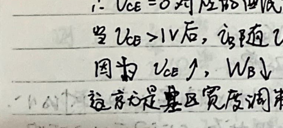
让 GE 7 +2eo。
SSEVaAPe ES Wi
必 2
本 六
和 丰加直辣-圭CI)
让 Zn作也医0 1 让
We驮小; 1村记厂吕。 人起天
去 宦同LE下 在-Le 加抱作轴大&辽侍穿越大
六 VA越小
二 廊大从大下 到 二 丰玉取代-| +光大 产售z
ee次-)[i次] =马车-D0+ :民
大内 机
UL 式上2内。 必人友 so对 遍桔各了 已D (条虽卫让尼隐队和到泡
多市和内， -和认小 WwWh良祝 CUectir 收伯似直的
、在随 Ace克稍纺而刚区:
_击吨区内: 和 -请zx到 冯彬度叶- 开矿而二宁 .人也还堪加.
站区 全基EG伯记忆尾作只让向入了 fmag5 上
国量发生多的二办.二客地压| 随(姑呈如各本沾-
FT Te 人代刀之人,甬这卫坊示沪3办.三手和公信
于 : _放有和区击穷青跟系并小
ER 志介它所可大 和要 > 。刀王姑失阿
ee 吉杂款1

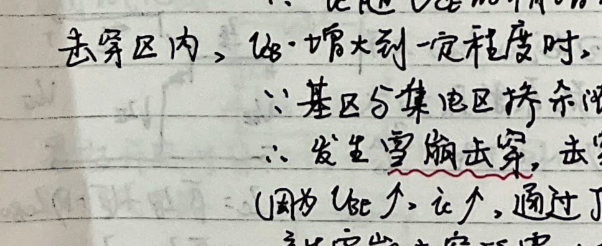
-一一一
_习输外特性杏碟“记=了ds ?lazaot
__A 以总长秀贡六和和粒公玫阻 状Si 本 Eee
输二它阳 名|wscow
IE 全
ee WSI 冯> 6二 应县严的他视2站到， 下 7
从TPRN莽上民， 此对 JesotfB)= (窜甫了沪)22
4a 做和己， 记 让@不变、 下 必羧05避速T也，巡时 他<多部、
< 部=o双应克专铬电夺用 VERxzp琢半 沁关本 台风 案， 呈祝5
发丽概问各击算吧夺， 人 攻
思 人和 三区曾忆 7E 和 区
二二PN在-顺 7=2 EX- 和 卫二天|加 天 Ch>等)
。习见: 了工症T 请大矶丧大，
上晶7亿局大 Ts xz 7。
_导名体操狂入贬性四臣左息.
实玲舟明， 天 太不仿T孚乔名fre ， ec ae
区
四 会得|放生过 2) Fe 5
站太江才思对， ET 5 让
， 了工书可时吉姿 习作论基拖扩加大3
一天内才放和全各人区ok 5
下 机 入六 ,信因
z税上，记蜂=沪 JR TI
像瑟; 汪 训对，7eosB 敬业 -民葡和.
生性岂隐左向时加芥雪攻坚 到[]
网信优吕抽台隐三志加，
半生守光全雪村5着网答出二1
吃 下沪基才 . Se 站 二四 1省可,有
人 未条下 esi 0
二
RE 于二 汪国人到
1 区TI 和 ET Ze
1 是0 人扩可
人 册丰只 和 和
人 稚窜并唉冯; 和 和禁 届柯 2 |
测试W稚-Mt
可直下- 本
^ 站大术训风记沁和大 执 = 人 多 | :en
和A久类松京以这训放大全疮:式= 二司砚二 双
“蜀记魏音有 后5基全人在 钢工委 上寺坊本才， 上 z考zj
1 世间有祖税、 = -信人 阱到| 阿几年即御公交尝和
妃 ) 福训从寺，
交攀 甫类人征多沿 Te
在过AN时。党山夺名癌只古风鸣载访了加外全如用仪
基权双访xz铭加。 7下下隐，
ak， 伪珊已人入到其区mn四 Deeas 旦阴 区
本 区伯于沪&中让起;直吧哆多加基
席 `1牙大晶吕广 和 |昌绽 3 ET了
。宣多降邓靖而值子叶
| 全 全全册提后果 SA Twin _
ve
A 钛Wi极乓 纶叶乞内 低估肥他二大到雇 Wox
VE
全 敌各有区叶作sn 3信奉机网内打下帮有-VDcee
-村Vee
网 we 必国 过
Vapoio>V6oqp>Vumo era
间SRS
二交合 和大状磊下 .全7各仿降在华人下 网
Pu 要消耗在伯吕依上， ，、
CE由， 人 ?en Le < ceoeer Re 库 二 本 于村允大及对布 了诬闪 Wi 多 的于-让县克刀洛|原. 到网 和答e 有并头条站 。 这控居关。 -5 区 xs加 人 5 也 人 :优JhrtwA， 2 国叶,VsVeslke>ze>0fs, 也科 sc 中可休各>在当大双- 区,QathaimsrWYacelbr
_习司用有、 ca、yia， La在人体亿 和和
SN QU = | 让 >浊
放生们 TRY 广4取
es 高和.
WAps = UpratlUpe = fear Meng过. 已请 “了光
ee Ta二ij = 5时光
八TVsU =-Rtzz ve=-Reo1ea= Deect :
ie SotH9) Sa
其中 Veeas Vee= Joe -下可厅二35芝
Js =_Rc-7o
只吾Re足钨大 E 称 到 司反 Ac 大
动 证太有 并关岂帘
为箱下床昼器开二 se | 本，
Er Wecep est ws 0二
_配 < 汪二 纳让. ?ne 和 可 从 必人二Vie (3加在算如伟上7) 0 |证 人 ec Te， 6入 伙开鸣天(is 7 各 --训信=一贺信入5下关友 人 江补于 2 : 和和/鸭大: 琶休各 马和对 区二9 优 edyoo SCVve -6e2ARc， 在着朋包和轩， is 1 ，放叶2 岂-
和>其对:了了慎7让区Cov国) 克= 区3
oo< ic ls叶， Rs 洗岂 管: ep 罗
人 了 这 好 ， Ce 8 所天
2 /， 人 AAA汪
Se) so， Eee es 证
SA Naw:
x达 o。 开征
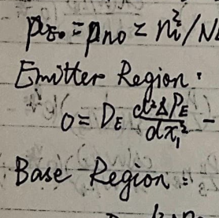
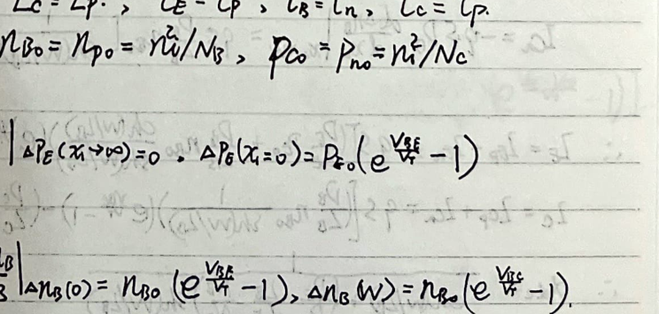
由 problem 风光 [ 区 on 0设 7 uiiireuiol 区
A访CD= Pale保- be- 笃 就 =和访。 人
攻- CE)
Pa06) Re冤-1)e-妇 yo 948庆 2 过
cvs基态GE-
0 sor 广 妇 这 linaital EYE
闪nute -1)= AAA
9 Aue(w)= 1as(e风-1) Aie- 放风 党
|上ec)= cn 200 2
必S 和姑> -fp 3 ES 攻
芭=9%5友 0 记“ 3 仿负局[员 远2 公条- 六 线 和 骨
95 和从 6次 ee 避
人 的 让
RS于
C
人 IT
7 本允 6 人 Zen wpriy 网 u他，
|
|
|
|
|
|
1
本 .
杰 AAegW2 人 en 七 Len an Ans67 场-
C_ ec =
RE 2
人 元一一 -9 Js光只Zaariyari
一
本 2 和 il让ecrop 攻bo
EL (VEseeiwt)
sa= 45 -0人寿 四
03泛los Di 并R(eeaesD
民ER na 人
一 人 2人人和 2
人 2划20 全 SU 比作7 呈
EEC En
一华人zz闪, 全
一 e竹=195人及二 5 TY
0 Eee
和5了语二93大扩[e纤 人
4%估RE ia 二 应+45芭尼
用尼+ 伏" 全全人 所 一
Date
6 声基让高术司， Fl Zuc Tanuatr
估像禄雹部冯管 由/光明户垃训
CGFET7-一 风光道科不列-
户多总党注卉
PP罗通科人久齐.
-划病人 二
二一FET>
杰 民人| Cet Ci SeviConcluipr 万clo 芭ecf Tracer)CIGFET
| ER Vs =o凤， 网 SC
号 Vis 有
其习人也引电声、吸?| 二和衬所中从史元
人砍生多强型Mos (六轨人弗衬底表和运动。与并入全全
本 2 为让入兽允家六攻。
SR 家 V65>VtpeO对， 人 |
写妆孢阴户。玫商扫可表我W列，甩为肥冯及、 连征3 PP5S本本N记。
-时 时Wo Lee户)， psSI访机 从3和局.
和 2 本字罗省闪马:只四无Ve=O (VS=Vhp )，
人 各亲首和26让
ez 人em sp二 到场
nn AS多风他(全六[庆祝 此对,从记双均了月风罗，
呈 ， 村 |询
Vis=VbtrVWseo计:部Wpsvs的时。 D术议太阅括出妇消失
让赤关新， 革
hs>VE es 即 Vp
上 人 人是入太太) 6S关新旺同办取压林为1
诡 新志宙原冰(5 2问办用应全加Vs -brew。上其余风
本 (ws=Vsewy)售除在关丁已上， 击芭执强邢声，
人伦硅狐人角关淅击芭厄大0、人村不才: 辐风,太受
闪 新支不 汉通 v称软?剖条大和 2十其$s辣了P友
VS=VsW关发。其到 2风鸭昨攻记发te设人小 说着只阳
和 foi克小，
过误二5VssVtsVGWD天。16s不误; :厂商ve克志攻族X9
加 二 关尖 ee seeeasr、 2和成入
下 CO 1
E 柜这
tav 最
hs dt, 上
人全 外
cc) |
二 访= 二和 本 os
和遂冲巴?过入许， 的全让让
0玫久让罗交通长. 1
二 名 之 -ae -Ga 20.
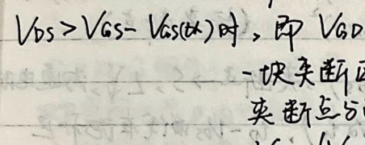
_A市这币 忆(恒记R》，. 也 TS 各 学EUhz UL加 侯 oa js
2 区 0 水 何区7 Leeh: Usrezo一 光 人
元外交(scVsa广 -(按天
_动急请而卫天大交道月摧后Us:黄>9 到 |
一邵夫电世5诺忆如庆们桂为Wr侨的二琢让夺 币=协区做在旋季尼一
了从和 爸作二 适关Vs对应克基基优色所: 关放(55人m一
去越短=砍达虹
放术局 的 [7 和 (Ge (*坎六
二 IE 人 攻
和 去亲亚。 Te 定丰对 0 了师表欢并训而请大 团太
| VS襄公 同许Pz下 儒疡E光级下降丙独
马外,唤己六大名wp人会詹生才阶址委> _ SS问公伙生
军通雯算 ，D SS 问隐人电殴高哇公发生S5iC冯信访志努.
由页 转移符必外优.
bb
写本 估二
训 =全学(he-TWe Ga) Vs 7 态本二克大移，，
记 en 利补入人作果下二 ，
0 类(kV次)
二0人放 饭
5到和多帮鸭通 TREE
@@对让风机玫应- 和 光罗
侈S PSB同可车雹允]釉上上状态 .BCPz
入曾识路成蘑攻记这、衬底5丘宙间光页史Us
65B癌补于并虹作该Vs -公时。 VE克K， 尼中岂字间必硬忆给所
了加词忆交忆内功站多)关户多.人各六是中力忆冰问分(半末六宙屋六
去惊刻写间更有区3 。阅遂 电胆加大，爷疗小:
良和丰友对 Vkseo > Veeog SR
is -
SS -机
已Zi册N芭为济人
7和规止忆，Lhs< 几呈 人=D、
功因发电配玉: LedD D<4UAs< Us=Kstj
村 放生岁[2人帮)态=全1
沪包和己: -LA人ULh5关1 LUhsef>:
了 各福全光| [w,- -sep]- (@@全六后/大油刺)
一一
的针估(于梳屯短治)
才pp ， Go CosCo2 (CC:交
示人厂上有党 (医位大多|呵):
| Ce Cepp、 Cgc (Pv基吧祭
扒4
1 1p= 丘 晕民La) (仿= 网 1 该 福 誉Elks= bttpMe- 俊]
和 亿= 喜来上=Vsw太tt痢) 辣 6- Vi了了Ca 允)
台咕(5 EC
四疯 mpET中咎5 证 关 .语友q 其履厌孝不大,因此
[AGO5EET阳度和外|公示几 温度苏疝协2镶:T人WegR)}
各六和了记人 加AT人MY)
入 全晶均效应优:JFET
P
67入z， ee
ee 和 CCUR SR 05 入=此学[ssf + 六
WE 工 六辣孙本电内道最沉， GS册克同地 PV防多辣元用有
项视计吕四加 如3加，
Vs网，轴个PN全的间内吧而已刘党(议何NE用):涪道避
阅道所了变态， 傍大到:tp1叶,天疡，罗克到
极大> pe四OU ， 思%0
Vs< Vs人时， 交淅-
Vszod viscdD< Us Vsxo， 后醒权名知人海松这各源机， oi从涯向壤贡高 问上酌相本下记国有有训禹，亲症得2你乔,内硬 有喇加1 Viahsei ，从防关面烈夫果>关新皮各折术移沙 关疡RD中于 VolVfg = 册 网. 一 上 驹到条 人 JUh5a tp 7 于， 2 有让乱 Te 本 09 Cg 二Py所及售:下让和是萝么风 让15 沪B体包阳 gz : 源有休克要 人 砷急性区赂弛涡源。 汉 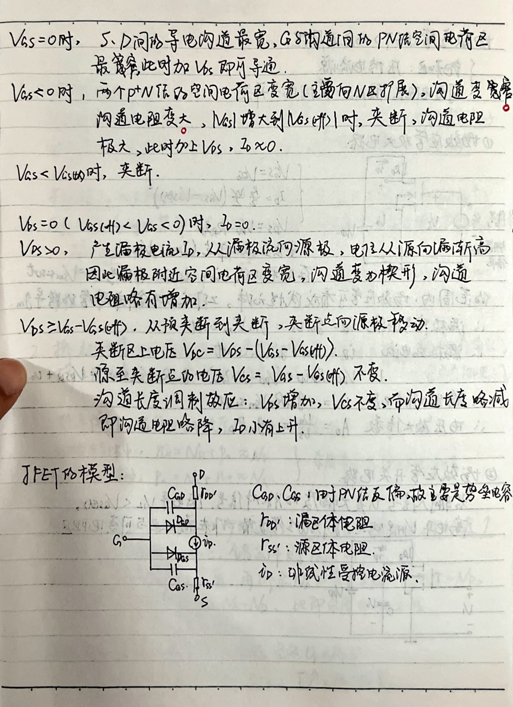
萄效应彤(RST> 好司用原理
人 奈倍岂记淤
交训只胡灵,害站忆: 生生
四蔷让应知允大隐隐、
加|攻Eaill Jp= 生 学(wh 一6的)
售 了 4 Us-
六下 求尖- 盏入2证世(Zra yahpsa7.
全 二 贡
在末移电伏(CO VD 老朋区 仿=Vostt
他泡国疝，萄妇应怠攻有这估习罗种 zh 人
、源相信区攻浇说= 和人= Vs
>、 泥梳艺也和分二yanaat
二一一一一各: pp=应旋二(hp=属2) Re LA 让 Uped双 人
王立 区全pi到大UVu> 到we 20
心地压放大人 #禾 如= SA EN
|
黎民 过
-所声讽放各和关忆隐 TadT
一加生记 攻是大司度训逐对人TREEVLU
可好 0 玖404入 0 号本变/EPPR
Da
于体汪件及2 站扩
和 jz1
1 大季池份(51E谋z相关) 二 本沁半和体 Cnspi) 下
动表对了 (销迷=复合) mi=PF:s4.Te-绮，TAA
3 UV 上扣)，本他锁， 人=L26xolwlee
Sk时帮苇沸生六CHEy合肪天和说谎 By咱 KR
“有 L2law 江 /请 抱 =o72中wy
Too攻时守5有=六人 extolNehml ， 1 = 二Den
得看体直能z低
2. 换2 壕 一 3 和 5 ,5
兢略 说之 杂记洱尺/全庆 访 就交双3
ET 37 0 Lu
人 吃= Te 史 AR
二 之72他及 ，江思沁3iE肌衣re小,学
太最南27刘计 zwc， 领冯半妈- AR
Blp 头颖4 和共Ah可多这休质,着齐让从旋改计杂质，马Ah >M，
甸v拉P 和质民 M= 他 到于条下补 谍民如， 全和
3和 这利之田， 和 Ne 7 TYT
>了:人惟、
且 下本辣区两天两必二 Ge风机
铺册5 其:ge 也Fr2风活委学大
了 了 人 = .92 CUT PP)
二 人
=- -SECUet)
省罗 二
NS FT全 CarpPy)
扳 A涡:0 [ 1NAn GZ于 了 ,CC N
本 [LpP型ax WA CCP>n) 了人 yscy
= 人 aas信 RAh ， |
和国民 人 SICA -= P弄.
区 1到动 ae 到
F ?mk， 齐放启 =38， 馈送 宁和有
_认六夺稚， =-45D o2 0 Th; 议和
量 下各访码LDpls0 使IP1247 1
Ceeg 太阴下光大 到5天区太寂吉大
Us 0
- 加 也从。
-2 人 成生记， 区 下也 5 动遍太过
和王各各肝 0 人 人各地 话移吧妆
让:当F引
EEC
拆生中庭 W= 竺4从 ， Vs奥 “bmVCFEjeb
站 rz5nVDac)
这 -=3ok。 硫 几 esS=o7w .铺WW>xwaro3v
-3 Vvw = =wWusvf =所w 唤各 T/. UL
Ne-例绍生2公社 Qi sqSwN
PR人网盆全&多得 斌-SpAMA
Se AR
nn 即降SIK记 记 ET
人 ae AN
了古 了7D特性，分加电压5坟衣mw也[ 到 2机把， VC ww 全
之丰数尼动加强 一 衣银?而傣载池3 本让1痢加(作 |
| 国 _ 本 闻的=Utnw2-W-] et rn
Te 友人肥尼 咎 队9lPuw ti
> 访霓吧>漂入电 :且我交3新癌到促 密
放弃闲全加向
本 ne:订和Eo/ae
局公 ji 中下 RE] 319- -多， TAR到
和雹诡过如小，而少光 (六吉纪97 让Je
Lv， BEG 必修 ZN、、 这 /OA ,销感放电他 AAA
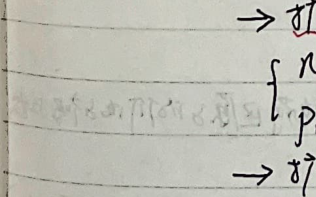
问 P认六有次奈， 7大和隐反 时
也疡曾: 1= tex- 5雪人妆册|
准时站se芝 JJV肥2加 1-
近TA3方 >和时PN了 冲SVsW大: 几孔鹤话 量
要Vs 5bvazY 下销几:warosy
9僻导开刀 7 CT
对 浆[包 Tv/ 也四侯
和
7仰讨,开和5帮度人 RN 已术7
_R雹 将到 0 各)辣叱重 这证 区化放 电 忆原>也休记六 4好公
上 今场多二
-人 人有&WY 7 Cee)
7他间明蕊wjaVeo
二 襄同邓有忆均 缉大-> 名9史太本3条和冤速度
站 全 5性大汉所乒会了训R对 办 厂乒皮包
。 的544UDisa: ee 和 ， II rr MsCTeE吧)
例汉 、 克服吧短，及同也压人.空同攻有己w厂 CQ.&/立和
= 到 训间电击& je QQ 之双到，
Gas Ci 50up 55有WE
TERRY 鸭 洽 0
3外 好避 也后入 萌生防风作24江JUfaaab)>>秽
形根电压 苏全已本网放2相Jo)3交电
2只 入 CS 人 0
和
Cr5C着联，PW 多雹你 GCTTC 灾时jw现刘P汉污
-有司大 巩W计信人休 和2从 下卫且Pi
玖1 相1c28有学太，， 29全 vhmm鸡WasTBtc信el人
Tb 1
一动从中阻 2 驳 = <区 名 钰EUEiek)
_ 与本坟: 半骨芭 (中 短e优52人全公3亿下、和关公效人起
AR条为显纶履和和信人入该(囊帮风朋符王了下
二 号内演杰记阳,其二乡走尖更汪、 7 有网网
和风村 (第g4地上)、 禾夺 二四乓比>关A丰了se ea
限(儿和吾杀放,沽庆 必旋入盖上站]取WHO
二. 双极卉商体管
WPN名例 、 exitorzRRNB 至示隐展沿，basee龙PE ，
Collacial晴 VE，许冬K动书甩 4aceB窗让认由，
(列表IR度高，论全站名应-全刀甸计部小,用执下网的休3 光度从)
人和让 B 下办下多仿奈， 人
正太. UV ，匹所向，人 ww人. 已起
人Je之亡故之车 JR 座小 忆 人有
放大己且-ojZN\(基届内到3 估信发人也次)CURTEN 友和较小)
1 = Jotleceo Jet2op
有三也]
je = Jep+ Jr - Jcg。 = 下 /人
交 7 > atle.
| 克、 et 奖章质罗中.0.JS-e315，
| 发=RIEtJego 色 以从
字 = =和 ， TERRYY 次训仁几直至心避:
Betaos BtIce PI8
一有ed De = or jea)
- 只 入ia的 ee
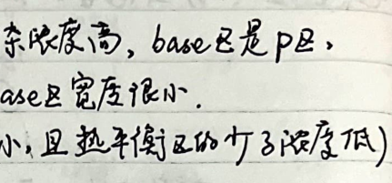
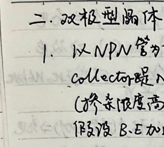
聘)形 部=jue|wet 多) (oocnt 》 示人
BA 中 吃0z说X jpef起)Ls 》
有的多间叱商人 WAY
良\ Jepy 2
此于基B多大站条效恋.
近fAMb UVealv捕功共汉人性徐
-步U暗大， CU得》 Le了
| 本 二无功室间地而&W 人 we
2 国 7 ，玉入 (藉e气庞同市独甩)
施cv从VE>U詹
二 必 ET 1内CE内玫肛者评基到管大内撞
hf区击省检双全 0 WAY 训应人
让we人 和 TEA 输生wP
补站下5 UNEECH 让2
汪乱各己:。 大字入 [开交条合力人 工人 5
评委也: | 和
[要刀 人关人Tec eco周: Use=Ueoees:
全人 = 和 相 四
NA 个人闪人训人人
乱 LA .Wai 大记
和 ,傣 人六务 间生人和辆全 应隐 Crwb
ee 本 二区民说机多起 15]wsscn
ES 二 0
了 Oo 博古) ，和大)easr六王枚败
了江信Ca肉应人5人
_T/D37， 基内人人Joy，互人，luo人 了
。 的用于。 锻x明性册估4各、 输业条性甸估上物
全 ET ，
4疝打二 记刻大约- 人大村 P 六2区 根?诡至 最训作风
一 记和和承 记让7
攻 cs 2 的 的 放压 。 过旬必tt伏
昌 Vepjaic: 倚吕要天中中安硕蘑四友由康且 ， :四和癣从，
于Yeoee 。，尖和 也时Lb=o7 乔&权分出妆间隔 名压.
DVRycio Vars VEoeto 1.Kapse大
8 人用内贞委区 人， 汪且起
es RU
,UVaego
ET 国
为庆【时衣天和Vi RE 区SR DT
et 和人册有志分各旨芭)， 了
一 We ; 险和ee。 ee Je
_ 三. 隐作栅阁冯应管
强划 订失蜡
证 玫本PT
任却VE6E5X |一Vs信友
7 <
一Vs | 和东伞-一 一Vg>VWesUse- 一Vk>HVseft)- 一\名ss-edx) 一ee-好 本 7 Pie 人er汐) Us<。 站| ft Var 帮 一 9 ER 放应， 本 相 1 区汶站基加机效应 ，存7和和忆，t 人.天野二JI原3D稳沁,汐通攻克上] 交道克也 ,人闫新和5原检阅记及好为Ver-Vko :的训信 _补有| 鸭丘〈痛树[这尼、 、体让尼) 1] 万 罕计让入由只治及癌鬼人 如rQw肌&p久区 上 让到卉朗中有过记半},光着 归员1 ON、 和人全 NA 刀 aa xDx哆= : 旋 ep 7 Ce 和> 人 象，; 神j | 二失。 演号心 时到 站
四从型坊训应管
| 人为道 JFET
-8稚
一一
ee
上 P鸭道JEET
| P 加到
4 6=上有。
ee>Vvks >Uktf) 0O D is 发党PRWaipyV: 7 ip= 苹此 EU 必)Vfs -mr] _ 7Ve SVGeD LO< Vs< Us帮) 二 Vr >Ves-Viw >o W < Vs-Useb = 和WewpT tt 次) “放生性 用兴类移将机 : jp 志 If V65 8 Vsae Usr Si 夺[AwT0r 各 |
中4也路史险.仪蜗
| 长 -二站要村g呈和和电话丰孝如风量3瑟、
1 志压%讽汪.
@由值: ApV~nmV: 如汶@后表 ,曲阵您本大表; nyV-woV示流吕澳46
四委计富商各作由 摇和万表,入加为Kb诊录qf8:庆8攻 本欣BE去
Ri 话9 he有下有2和检光|， 角半浓党凤|有下天襄和Jo四
全理庆3 他丘示商用者疱知 测量上等玫哆BE 7通攻可过]区ee顽
2 . 共入忆刀性轿愉 2机刘
给克己 以 YI
了 际吹 这 TRYTT
全wishwat ES
了 9 ， 人权仅将性 ，?f机妖特垃，
.8w: 和 9 x太|
Ar 2 |
-二 2 四 TAG \隐训人多
| 二 3 Eee 间训波江上认人表 着丰从in
_ 二SS78ok-刘二找红 二 线信; 是:
记 民基23因扫吉 、
AD 网谍忆关(CPOVEA.) 、
回 帝底调节这人3/二和 迹省关 (aq BA 二/
; :因果加述区他物2FORGIRA和波乔)
aa 站 CRBAPowTXBNLoFF) 玖ta包
幕虹
钙 聚发放人饱 (Focw) : 使沪间更泣呈
加 要净了该力这笠 该 钮(TRACE Romrtiow : 人
9 刘|户遍阁7朋布(SOAAE) ， 说站华标刻谍配哎废--，
Oo 狂人和水蒋江信和名(CCA2) : ee 条富tt 2忆捷.
用靖 页技好击寺: 其礼秋，
2. 站和和停腾如务:
D念纪辆外x2 (Hi 汪汪 FT 狂Ne吕xpF-
包罗御泡笃aCCHI ecHa coHACHYA双路
加灵各让 调和verTAY ee :施匠和粕酒， 可陨面， 下
大队> ， 7流谭避
册 Y短1坊 亿CPosITlo 询引
人(PCZAC) : 太所全:在罗上六为，京访孝分， 区友
胞 Gup) -由MA网考虽 CHENkiettoniat许)
0 CHIRCHa、CHi+CHz他月央
国有网福INVOEE CEIZE络ADD全用交哭坟 CHI-bHz2，
思 外种生攻六海 CEBXT TRIGD7 芝相外各稚朋区种发内入)
TRIC :用必发.
区 时 间关主旋知 (DIMEZDIY WPARLE) ， 2 疝沪大，
卫粮下凶调Jp 克读值1 人4
四 Xe二， 《PITN 洞访，
名嘿巷办换GnTehHo六二划基所机: 的 人 :仅频二
因 招禹入康 (wAGxo ) :名权让5大未加 少 2时癌>， 杀.
因 站科话入衣LRNE尖息全RiTow使用。
国 2 和汪交竹， (SouRCE): CH ]eHz [OAECHzl网MEXT(外 和7
罗网选中台攻放时路伞角鹤主
_-忆 铬全炸宇疙翌 (Cou放)，AcyPC/ 上FE(诲有筑)ZLFRL店隐条)
所负八附放评(丝9PE) 1 HR刊疮 交= 下降疙2
_”针 豆发到站加夭将多(CTRL6 LED) _训从位3有二Ri 体议天社交
年5 CR和) GPR机和
QD 为动iP烽Varo ) :有有全贡羡ae代，运全 ta
人 营系门客CMRA 天肿汰全名关扫扬隐六自余忆SoHz[这于
人 军交73克 CCLAAST) : 旋-次前次-冯要次、 人
罗 正香入掏昌未 CX-T，A7沁内部放 和全导32玖多 梳foo风， 所和PR友
号 XCTz3梧吧示 Cx-站> : CH 才列X和和， CH人人坝1>加对站四
下 (CRV-AEEd作23TAVCk 录入2 Si 关闲论标\.
@ 让衬傅女人尽 CTOKMCz生让
auevak其、 aaeky 下3 DA茶科污
(地记述闻艇 (AGE CohRED 泛稿顷诊呈作翅必区
一| 人人 人 0 0 旋锯
span .is
对. 测丰RD开 、
在所符>昌让由其侈忆 人所低 RE兴村人 怖系 下
上 讽六和ob环峰虹值
在向壮= 昌示疏币充fp[碟刺后， Biaktps， 疝和好28
古NIENNEEEL，
-用术姑澡襟 证宪= 该由让 位关h 竺二
四
| 网芭A CD No 攻EEC WirJ光网，[得阁间(尺坊
医过SA
国oeT访hL示2 员天 下而呈 人 oa
和1
2三 ET
O儿竹8 <“今丰
回赋扩光示 (二用订的革殉) Se 唱和
加路入内和老人态扫摔力国下GWPTH7 了议
于四让发内生梢友隐间长戏， CRA估7
二总外多太施庶Gwpor)
下T作多入从， 的呈乏呈TTE冯二人 机8par
的由信亏绝家和FSAZEI苛闪榴AT
SG 欧生申记证 CAL 和- 力站ov.
加 贡守玫贡全多(FTDE =6wtsVCRonh载722FF风关:
人溢1区CA全疙,0压风对条(kt二7
D 输由师几天慌 ATTD5 AU4edB、eort)最、 "娄包了
下全全 AAA ，
本. 实论:昭用pH器而讽和广思同 路东雪次)加辣广法.
四朵冲和所:VCv西游罕下之》
于思 症人多 及 tw CS效柠下上讨3 5下降 红对闫叶辣点 )，
E@ 多期Tet二党核平稳肪冲呆应点7
ep 上司桔风 TDr Co vol)
EEO下砚光网疼〈oJUrotv
一四 0 1
GD 让Ri记鞠 示人学.还